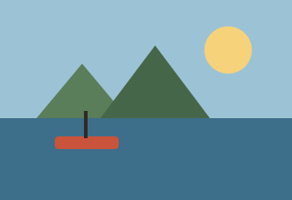
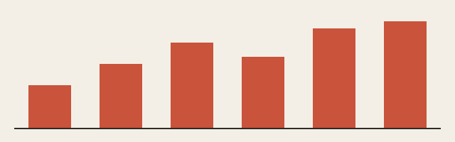

A winter at the harbour

When the ferries stop running in November, the harbour becomes a different town. The cafés close their terraces, the fishing boats come in early, and the few of us who stay learn each other's routines. I went there to write a book and ended up keeping a diary of the weather instead.
The mornings are dark until ten. I would walk to the end of the breakwater with a thermos and watch the light come up behind the hills, first grey, then a thin band of orange that never quite made it to yellow. Most days the wind decided everything: whether the boats went out, whether the shop got its delivery, whether anyone bothered to talk.
By January I knew which gulls belonged to which roof.
Nobody here asks what you do. They ask whether you have enough firewood.
That question turned out to be the most useful thing anyone told me all winter. It is a question about planning, about honesty, and about whether you have thought further ahead than tomorrow.

In March the first ferry came back. I watched it round the point and felt, for the first time, a little sorry.